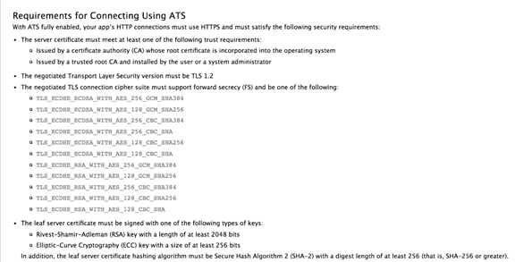
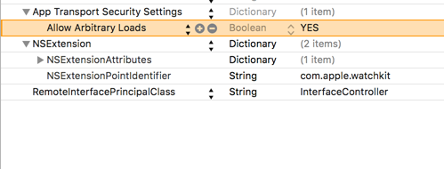
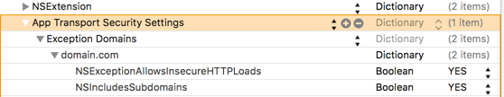

One of the most common misconfiguration issues that I find during testing iOS apps is the bypass of the App Transport Security feature introduced by Apple in iOS 9. Here’s an excerpt from Apple’s documentation about ATS.
“Starting in iOS 9.0 and OS X v10.11, a new security feature called App Transport Security (ATS) is available to apps and is enabled by default. It improves the privacy and data integrity of connections between an app and web services by enforcing additional security requirements for HTTP-based networking requests. Specifically, with ATS enabled, HTTP connections must use HTTPS (RFC 2818). Attempts to connect using insecure HTTP fail. Furthermore, HTTPS requests must use best practices for secure communications.”
It is important to note that just using HTTPs is not enough. The following screenshot taken from Apple’s documentation discusses the necessary conditions necessary for ATS.

Since updating to iOS 9, developers start getting errors like if the app is not communicating over a secure connection.
Connection failed: Error Domain=NSURLErrorDomain Code=-1022 “The resource could not be loaded because the App Transport Security policy requires the use of a secure connection.” UserInfo={NSUnderlyingError=0x7fada0f31880 {Error Domain=kCFErrorDomainCFNetwork Code=-1022 “(null)”}, NSErrorFailingURLStringKey=MyServiceURL, NSErrorFailingURLKey=MyServiceURL, NSLocalizedDescription=The resource could not be loaded because the App Transport Security policy requires the use of a secure connection.}
The reason for this is because developers are mostly testing their apps against a staging server with a misconfigured certificate. In some cases, they might be communication with production servers over HTTPs but might not be using old TLS versions. A simple google search will take you to a Stack Overflow that tells you how to bypass ATS by setting a single key NSAllowsArbitraryLoads to YES in the Info.plist file.
The following configuration in the Info.plist file shows the ATS feature bypass implemented.

ETHICAL HACKING TRAINING – RESOURCES (INFOSEC)
However, in some cases, the developer might have a secure communication with their backend server. But communication with third party servers for Analytics, Crash logs, etc. might not be over a secure connection. In this case, they can add certain domains as an exception.

To find whether the app has ATS enabled or not, you can perform the following steps.
By the end of 2016, App transport security is going to be a requirement for App Store apps. It is important that you report any ATS bypass to the developers during security assessment of iOS Apps.